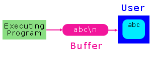

Module E - Standard Libraries
Formatted Output
Design algorithms to solve small problems using formatted
program output.
putchar |
printf |
Exercises
The standard C libraries include functions for sending
text output to the standard output stream (typically, the
monitor).
The system file <stdio.h>
contains the prototypes for these functions.
Standard output is buffered. The
standard output buffer empties to the standard output
device whenever the buffer receives a newline character or
the buffer is full.

Buffering enables a program to continue executing without
waiting for the output device to finish displaying the most
recently received characters.
The two C functions that provide output facilities
for the standard output stream are
putchar
putchar writes the character
received to the standard output stream buffer and returns
the character written or EOF if an
error occured.
The prototype for putchar is
int putchar ( int );
For example, to send the character 'a'
to the display and to display it in character
format, we write
Note that putchar can take EOF
as an argument.
printf
printf sends data under
format control to the standard output stream buffer
and returns the number of characters sent.
The syntax of a call to printf is
printf ( format string , value, ..., value )
The format string is a literal string that consists of
characters interspersed with conversion specifiers.
The character are displayed as is. The conversion specifiers
describe how each value argument is to be displayed. There is
one specifier for each value argument in the function call.
Conversion Specifiers
A conversion specifier begins with a %
and ends with a conversion character.
The conversion character describes the data type of
the value to be displayed.
| Specifier | Output As A | Use With |
| %c | character | char |
| %d | decimal | char, int, short, long, long long |
| %u | decimal | unsigned char, int, short, long, long long |
| %o | octal | char, int, short, long, long long |
| %x | hexadecimal | char, int, short, long, long long |
| %f | floating-point | float, double, long double |
| %g | general | float, double, long double |
| %e | exponential | float, double, long double |
For example, the following code yields the output on the right
int i = 15;
double x = 3.141592;
printf("i is %d; x is %lf\n", i, x);
|
i is 15; x is 3.141592
|
Between the % and the conversion
character, there may be
% flags width . precision size conversion_character
- flags
- - prescribes left justification of the converted value in its field
- 0 pads the field width with leading zeros
- width sets the minimum field width within which to
display the converted value (overriding with a wider field only if necessary). The converted value
is padded on the left (or right, for left alignment). The padding character is
space or 0 if the padding flag is on.
- . separates the field width from the precision.
- precision. sets the number of digits to be printed after
the decimal point for f conversions and the minimum number of digits to be printed for an integer
(adding leading zeros if necessary). A value of 0 suppresses the printing of the decimal point.
- size identifies the
size of data type of the value passed.
For integers:
| Size Specifier | Use With |
| none | int |
| hh | char |
| h | short |
| l | long |
| ll | long long |
For floating-point values:
| Size Specifier | Use With |
| none | float |
| l | double |
| L | long double |
We use escape sequences in the format string to represent the
%, \,
' and " characters.
The following program produces the output on the right
/* Playing with printf formats
* printf.c
* Oct 8 2004
* BTP100
* Chris Szalwinski
*/
int main( ) {
/* integers */
printf("\n* ints *\n");
printf("00000000011\n");
printf("12345678901\n");
printf("---------------------------\n");
printf("%d|<-- %%d\n",4321);
printf("%10d|<-- %%10d\n",4321);
printf("%010d|<-- %%010d\n",4321);
printf("%-10d|<-- %%-10d\n",4321);
/* floats */
printf("\n* floats *\n");
printf("00000000011\n");
printf("12345678901\n");
printf("---------------------------\n");
printf("%f|<-- %%f\n",4321.9876546);
/* doubles */
printf("\n* doubles *\n");
printf("00000000011\n");
printf("12345678901\n");
printf("---------------------------\n");
printf("%lf|<-- %%lf\n",4321.9876546);
printf("%10.3lf|<-- %%10.3lf\n",4321.9876546);
printf("%010.3lf|<-- %%010.3lf\n",4321.9876546);
printf("%-10.3lf|<-- %%-10.3lf\n",4321.9876546);
/* characters */
printf("\n* chars *\n");
printf("00000000011\n");
printf("12345678901\n");
printf("---------------------------\n");
printf("%c|<-- %%c\n",'d');
printf("%d|<-- %%d\n",'d');
printf("%o|<-- %%o\n",'d');
printf("%x|<-- %%x\n",'d');
return 0;
}
|
* ints *
00000000011
12345678901
---------------------------
4321|<-- %d
4321|<-- %10d
0000004321|<-- %010d
4321 |<-- %-10d
* floats *
00000000011
12345678901
---------------------------
4321.987655|<-- %f
* doubles *
00000000011
12345678901
---------------------------
4321.987655|<-- %lf
4321.988|<-- %10.3lf
004321.988|<-- %010.3lf
4321.988 |<-- %-10.3lf
* chars *
00000000011
12345678901
---------------------------
d|<-- %c
100|<-- %d
144|<-- %o
64|<-- %x
|
Note that
- doubles and floats round to the requested precision before being displayed;
- double data may be displayed using %f (printf
converts float values to doubles for
compatibility with older programs);
- character data displays in various formats including character, decimal, octal and
hexadecimal.
- ASCII encoding is assumed for the character example.
On many machines, character data is encoded
under the ASCII standard.
Since not all implementations use ASCII encoding, it is more
portable to refer to character constants by their symbolic form ('A')
and special characters such as newline, tab, formfeed, etc. by their
escape sequences (\n, \t, \f, etc.)
rather than their decimal or hexadecimal codes.
Systems that use other than ASCII encoding provide the appropriate conversions for the symbols and the escape
sequences.
Readings
- Experiment with the printf.c program, trying
different flags, widths and precisions.
- Read pages 70-72 from the Evan Weaver's C subject notes.
|